Оглавление
- Виды красителей
- Натуральные красители
- Универсальный рецепт приготовления натурального красителя
- Хранение натурального красителя
- Как окрашивать мастику натуральными красителями
- Сухие и гранулированные красители
- Можно ли использовать красители для яиц
- Как окрасить мастику сухими красителями
- Гелевые красители
- Как окрасить мастику гелевыми красителями
- Кандуриновые красители
- Как окрашивать мастику кандурином
- Общие рекомендации по окрашиванию мастики
Яркие торты, украшенные всеми цветами радуги, сразу приковывают взгляд. В домашних условиях их легко приготовить, сделав для этого сахарную мастику. Однако важно не только правильно выбрать рецепт и следовать пошаговым инструкциям, но и узнать, как покрасить мастику красителем, чтобы у нее был насыщенный цвет, который вам нужен.
Виды красителей
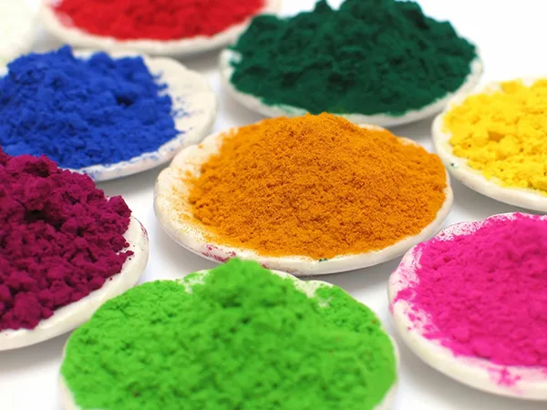
Для создания кондитерских шедевров можно использовать разные виды пищевых красителей:
- синтетические и натуральные жидкие;
- сухие и гранулированные;
- гелевые;
- кандуриновые (порошковые).
Дополнительно их можно разделить на жирорастворимые (для масляных кремов, шоколада, как обычного, так и для моделирования), спирто- и водорастворимые, в зависимости от того, в какой среде они тают.
Синтетические жидкие красители используются редко, в основном для окрашивания мастики и готовых изделий кисточкой. Также их берут для аэрографа. Самые распространенные и простые в использовании виды – это сухие, гелевые и кандуриновые.
Натуральные красители
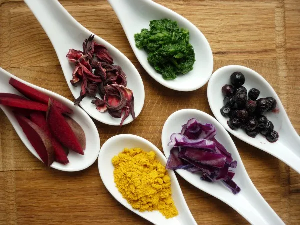
Конечно, отдельным пунктом стоит выделить натуральные красители, полученные из фруктов и овощей, различных частей растений (листьев, корней). Их можно сделать дома, из доступных продуктов. Продаются они и в магазинах, зачастую в виде порошка, масла, жидкости.
Их достоинства:
- можно приготовить самостоятельно из тех продуктов, что есть в холодильнике (о том, как сделать пищевой краситель дома, читайте дальше);
- натуральность и безвредность, что делает их оптимальным вариантом для детских тортов;
- невысокая стоимость.
Их минус – недостаточно яркий цвет, мягкий и пастельный, поэтому их редко используют для приготовления изделий на продажу. Также их сложно хранить и никогда нельзя с точностью гарантировать, какой цвет получится, ведь на это влияет множество факторов: окисление, воздействие воздуха, взаимодействие ингредиентов.
Разберемся, как сделать цветную мастику для тортов основных оттенков, которые затем можно использовать для создания других цветов путем смешивания.
Универсальный рецепт приготовления натурального красителя
Измельчите выбранный ингредиент, залейте водой и доведите до кипения (кроме вина). Затем дайте настояться до остывания, процедите и используйте по назначению. Перед процеживанием хорошо подавите продукт ложкой, чтобы из него вышел весь сок. Чтобы цвет был более ярким, добавьте в воду до закипания немного лимонной кислоты, сока лимона или уксуса.
Также можно просто отжать сок и использовать его в сыром виде.
Красный цвет
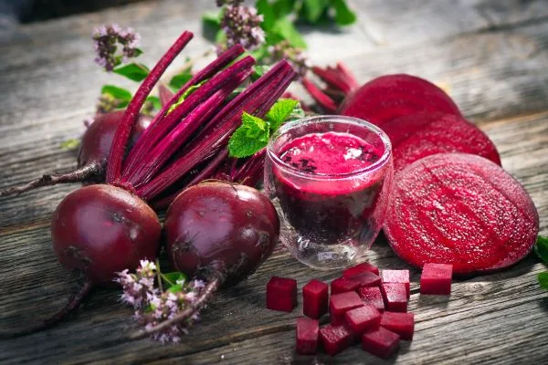
Разберемся, чем красить мастику, если нет красителей красного или розового цвета. Используйте следующие продукты:
- свеклу;
- клубнику;
- малину;
- вино;
- бруснику;
- кизил;
- клюкву;
- вишню;
- смородину.
Вино кипятить не нужно. Клубнику и малину также не рекомендуется доводить до кипения, так как от этого они приобретают серый оттенок. Просто нагрейте воду с ними и дайте затем настояться подольше в холодильнике или при комнатной температуре.
Синий
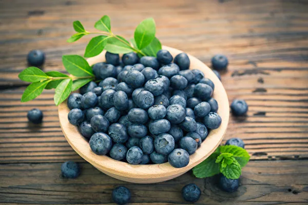
Чтобы получить синий цвет мастики, возьмите:
- краснокочанную капусту;
- голубику;
- темный виноград;
- чернику;
- ежевику;
- жимолость.
В зависимости от выбранного продукта, времени его кипячения и настаивания, оттенок может варьировать от светло-голубого до насыщенного фиолетового.
Зеленый
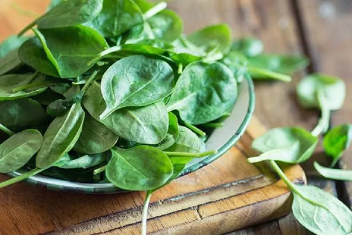
Пищевая краска для мастики зеленого цвета получается при использовании:
- шпината;
- брокколи;
- мяты.
Желтый
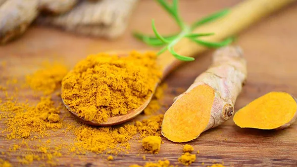
Для желтого цвета возьмите:
- шафран;
- куркуму;
- апельсин или мандарин.
Шафран залейте небольшим количеством воды или водки и дайте настояться сутки. Чтобы покрасить мастику куркумой, специю в виде порошка разведите в нескольких столовых ложках теплой воды и используйте сразу же.
Цитрусовые измельчите вместе с коркой и немного проварите. Затем процедите. Желательно сначала очистить цитрус, удалить белую кожицу, а затем порубить отдельно мякоть и корку. Это поможет убрать горчинку.
Коричневый
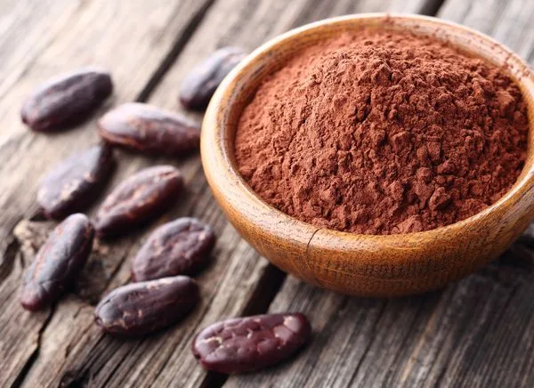
Чем заменить пищевой краситель для торта коричневого цвета? Используйте:
- какао;
- кофе;
- коричневый сахар;
- черный чай.
Чтобы покрасить мастику какао, всыпьте его в виде порошка. Если вы хотите взять кофе или чай, заварите крепкий напиток и дайте ему настояться. Коричневый сахар нужно растворить в небольшом количестве теплой воды перед добавлением.
Выбирая продукт, помните о том, что некоторые из них имеют достаточно яркий аромат, который может повлиять на вкус готового изделия.
Хранение натурального красителя
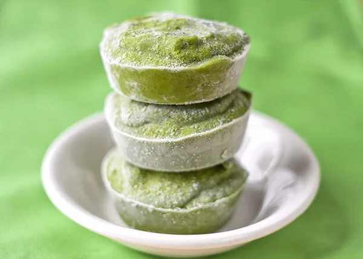
Готовить его нужно непосредственно перед применением, так как он плохо хранится. Если же вы хотите сделать его заранее, используйте соковыпариватель. Выпарите жидкость, добавьте в нее немного сахара и закатайте в небольшой стерильной баночке. Храните в холодильнике.
До того как красить мастику, сок также можно заморозить в формочках для льда или в силиконовых формах для выпечки, а когда он застынет – сложить в герметичный пакет. Так вы избежите слипания кусочков. Однако сок ягод от заморозки может утратить яркость цвета, так что будьте осторожны. Хорошо заморозку переносит сок шпината, брокколи.
Как окрашивать мастику натуральными красителями
В первую очередь разберемся, как покрасить готовую мастику. Если вы используете купленную массу, слегка разомните ее в руках, сделайте небольшое углубление на поверхности и влейте туда натуральный краситель. Добавлять жидкость нужно понемногу, чтобы не испортить консистенцию покрытия. После этого тщательно вымешайте взятый кусок. По мере необходимости подсыпайте сахарную пудру или крахмал, чтобы масса не размякла.
Как покрасить мастику из маршмеллоу, если вы готовите ее самостоятельно? Влейте подготовленный натуральный пигмент в процессе приготовления. Например, в растопленные зефирки, если вы делаете покрытие для торта по этому рецепту. Или же в сгущенное молоко, если предпочитаете молочную разновидность.
Сухие и гранулированные красители
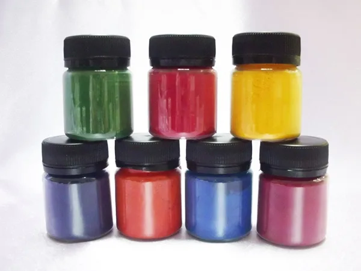
Сухие красители продаются в виде порошка или гранул. Гранулированная продукция хранится в целом дольше, она менее подвержена воздействию влаги. В остальном же их свойства, преимущества и недостатки схожи.
Главное их достоинство – это доступность. Они чаще встречаются в продаже и стоят дешевле, чем другие пигменты. Но на этом их преимущества заканчиваются. Чтобы мастичная масса была окрашена равномерно, порошок или гранулы нужно развести в воде или водке. Дополнительная жидкость же меняет консистенцию изделия, из-за чего оно может «поплыть».
Если же использовать пигмент в сухом виде для цветной мастики в домашних условиях, его гранулы не растворятся в массе и так и останутся заметными глазу крупинками. Это испортит вид изделия. Кроме того, порошок не дает достаточно насыщенный цвет, хотя он и получается ярким. Если вы, к примеру, займетесь покраской в красный цвет массы для лепки божьей коровки, то фигурка будет не красной, а ярко-розовой.
Можно ли использовать красители для яиц
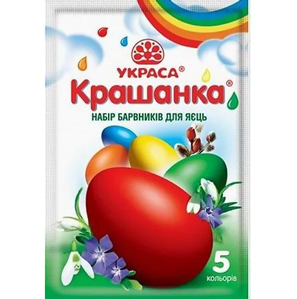
На Пасху прилавки каждого магазина пестрят упаковками с материалами для праздничного декора. Поэтому многие задаются вопросом о том, можно ли красить мастику красителями для яиц, которые остаются после пасхального воскресенья. Мнения расходятся. Некоторые кондитеры утверждают, что успешно использовали такие порошки. Другие же говорят, что в качестве красящего вещества для кондитерских изделий их применять нельзя.
Истина где-то рядом. Так как сухие пасхальные пигменты относятся к разряду пищевых, навредить организму они не смогут. С точки зрения безопасности использовать их можно, поэтому так часто слышно: «Мы красим мастику красителями для яиц».
Однако если вы хотите получить красивую, вкусную массу нужной консистенции, от них лучше отказаться. Все дело в том, что они все же предназначены специально для скорлупы яиц. В их состав, помимо непосредственно пигмента, входят еще и соль, сахар, лимонная кислота, декстрин. В таком составе нет ничего криминального, но вкупе эти ингредиенты могут ухудшить внешний вид, вкус и эластичность мастики.
Специальные же кондитерские красители состоят из пигментов без добавок, поэтому предсказать их «поведение» в сахарной пасте гораздо проще.
Как окрасить мастику сухими красителями
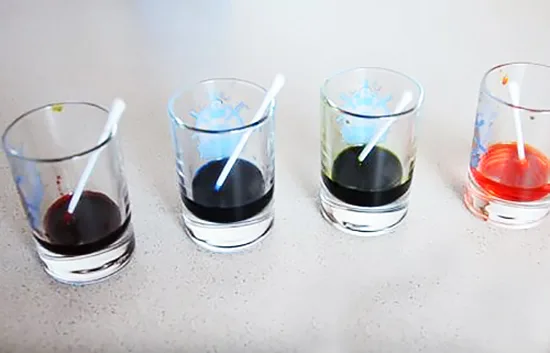
Порошковые и гранулированные пигменты лучше использовать в жидком виде. Вот как покрасить мастику сухими пищевыми красителями:
- Разведите их в теплой воде, водке или лимонном соке. Возьмите порошок на кончике ножа и тщательно размешайте его в 1 ч.л. жидкости или даже в еще меньшем количестве.
Рекомендация!
Добавлять воду или водку лучше по капле, чтобы контролировать густоту красящей смеси и насыщенность цвета. Тогда она не повлияет на консистенцию мастики.
- Добавьте жидкость в сахарную массу и хорошо вымешайте.
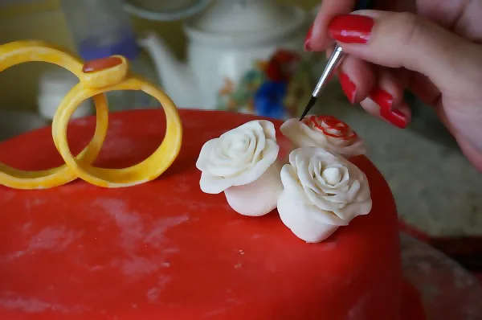
Есть и еще один способ, как красить мастику сухими красителями. Можно наносить порошок в сухом виде кисточкой на готовое изделие. Или же попробуйте окрасить высушенную готовую фигурку или покрытие разведенным в водке порошком с помощью той же кисти. Водка быстро испаряется, поэтому изделие не размокнет. Вместе с тем она придает ему блеск и убирает остатки крахмала или сахарной пудры. Цвет получается насыщенным и ярким.
Обратите внимание!
Если вы готовите мастику сами из маршмеллоу или сгущенного молока и вся она будет одного цвета, сухой пигмент лучше добавлять в расплавленную смесь в первом случае и в само сгущенное молоко во втором случае. Тогда вам не придется добавлять лишнюю жидкость в массу и менять тем самым ее консистенцию в худшую сторону. Вот как покрасить мастику сухой краской, чтобы она при этом оставалась пластичной и податливой.
Гелевые красители
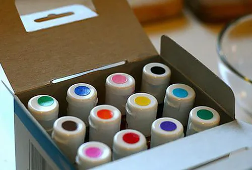
Плюсы:
- у них нет запаха и вкуса;
- их не нужно предварительно разводить для использования – можно капнуть необходимое количество прямо в мастику;
- они экономно расходуются (на килограмм мастики достаточно капли геля);
- дают яркий и насыщенный цвет;
- легко вмешиваются в готовую массу (как красить мастику гелевыми красителями, читайте дальше);
- не меняют консистенцию пасты.
Минус только один – высокая стоимость. Они стоят дороже практически всех остальных видов. Найти их можно в специализированных магазинах для кондитеров.
Как окрасить мастику гелевыми красителями
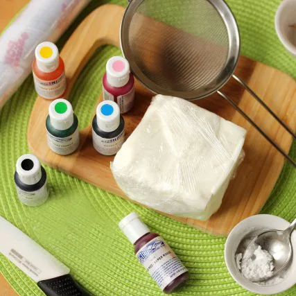
Добавьте небольшую каплю геля нужного цвета в мастику во время ее приготовления и тщательно вымешайте до однородности оттенка. Также окрасить можно уже готовую массу.
Важно!
Если вы собираетесь обтягивать торт, ни в коем случае нельзя добавлять много геля – тогда покрытие потрескается и будет крошиться.
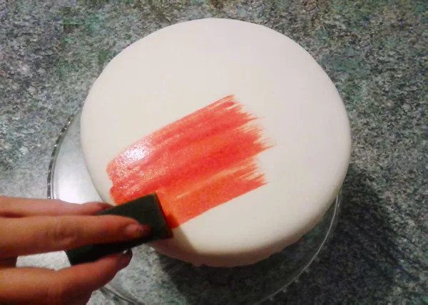
Есть еще один вариант, как можно покрасить мастику гелевыми красителями – развести их небольшим количеством водки и нанести на поверхность изделия губкой. Конечно, окрашивание не будет таким равномерным, как при добавлении пигмента в саму массу, но такой способ убережет ее от крошения.
Кандуриновые красители
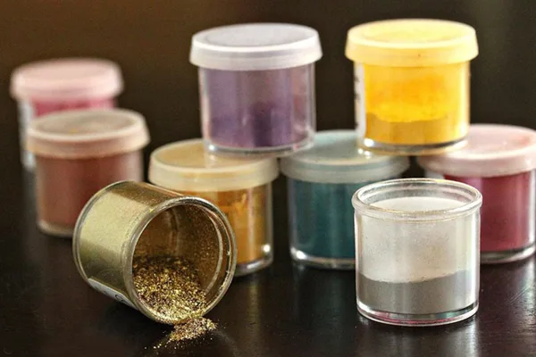
Кандурин – это особый пигмент, благодаря которому можно покрасить изделие в золотой, серебряный или перламутровый цвет. Он не добавляется в мастику, а наносится сверху на готовую фигурку или покрытие торта. Продается как в сухом виде, так и в жидком.
Аналогов у кандурина нет, серьезных недостатков – тоже. Зато торт с ним становится более торжественным и выглядит, как настоящая драгоценность. Он незаменим для создания золотых деталей и фигурок (например, блестящей застежки-молнии на торте-сумочке или кольца).
Как окрашивать мастику кандурином
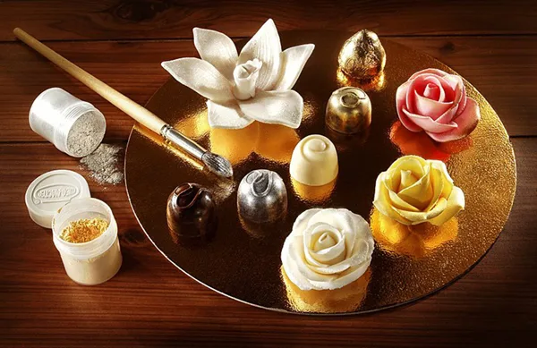
Посмотрим, как покрасить мастику кандурином. Декорировать им торт можно несколькими способами:
- В сухом виде. Кисточкой нанесите порошок на фигурку или мастичное покрытие, затем смахните чистым ворсом или сдуйте остатки.
- В жидком виде. Разведите сухую смесь водкой (1 к 2) или используйте готовый жидкий кандурин. Наносите его кисточкой, как и сухой. Можно разбрызгать его с ворса кисти, чтобы получился красивый эффект золотых брызг. Также попробуйте использовать его для аэрографа.
Общие рекомендации по окрашиванию мастики
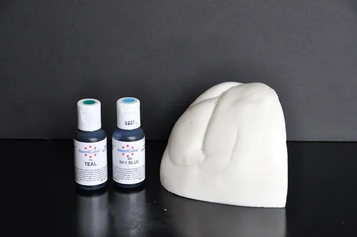
- Прежде чем красить мастику в домашних условиях, необходимо положить ее на припыленную крахмалом или сахарной пудрой рабочую поверхность. Немного помесить, чтобы она размягчилась.
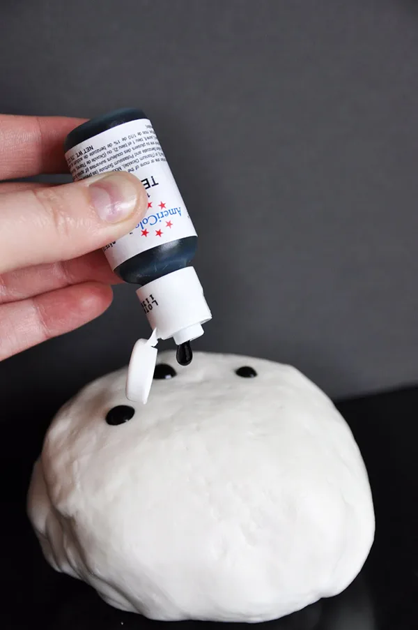
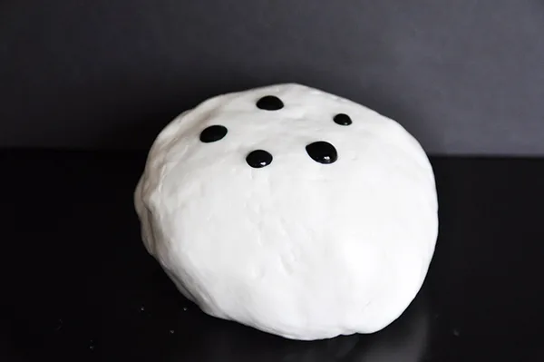
- С помощью зубочистки или дозатора добавить несколько капель жидкого красителя и месить до тех пор, пока весь кусок не будет окрашен равномерно.
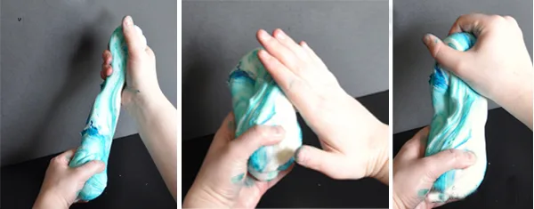
- При необходимости добавить еще красителя. Не стоит сразу вмешивать много пигмента: лучше добавлять по капле, тогда можно будет контролировать консистенцию массы. Чем больше пигмента, тем ярче и насыщеннее будет цвет.
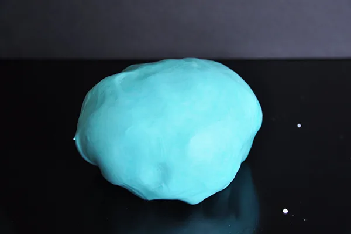
Помните!
Чтобы готовый торт не имел белесый налет, обязательно смахните остатки пудры или крахмала кистью, а затем смажьте покрытие и фигурки водкой или яичным белком. Тогда цвет деталей будет гораздо ярче.
Смотрите, как покрасить мастику на видео:
Пишите в комментариях, какие пищевые красители лучше использовать для мастики по вашему мнению. Какие предпочитаете использовать лично вы, а с какими вы не смогли добиться желаемого результата?